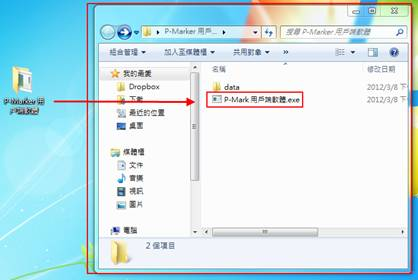
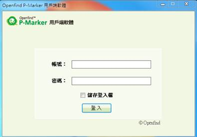
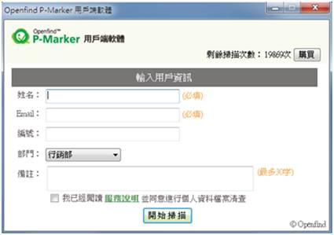
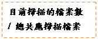
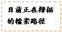
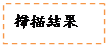
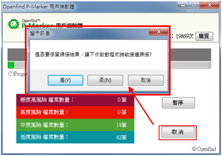
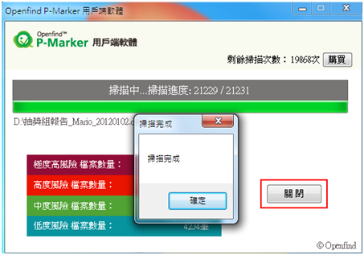

（1）將P-Marker 用戶端軟體整個資料夾複製到您的電腦端，開啟該資料夾並點擊資料夾中的P-Marker 用戶端軟體.exe 檔案。

（2）輸入帳號與密碼並按下登入按鈕。

（3）輸入用戶資訊，包括姓名、Email、員工編號、部門，並閱讀服務說明並勾選同意進行清查，然後按下開始掃描按鈕。

（4）掃描過程中，會顯示目前掃描進度以及目前掃描情況。

（5）掃描過程中，可暫停或取消目前的掃描。若點選取消，會跳出警示視窗詢問是否要保留掃描結果，若保留掃描結果在下次啟動此軟體時，就可以直接接續掃描。

（6）掃描完成後會跳出訊息視窗告知掃描完成，代表此電腦已完成個資盤點，並將盤點結果上傳至Openfind 伺服器中，使用者即可關閉此軟體。
